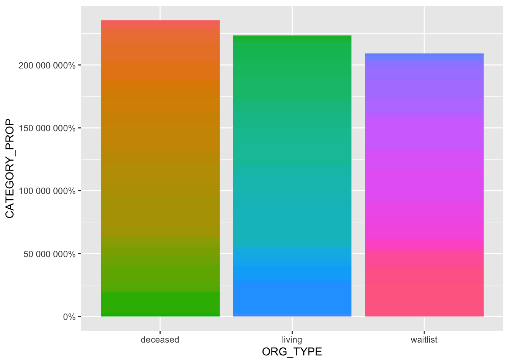
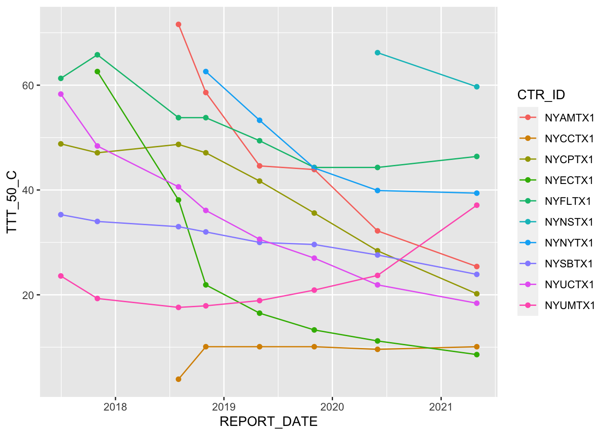

Plot Drafts
First plot is offer acceptance ratios by center… will need to reduce number included in plot
all_data = read_csv("data/all_KI_data.csv", col_names = TRUE) %>%
nest(WITHIN_RADIUS = matches("_WR$")) %>%
mutate(REPORT_DATE = ymd_hms(REPORT_DATE, truncated = 3),
REGION = as.factor(REGION),
REGION = addNA(REGION))
## Rows: 78940 Columns: 141
## ── Column specification ────────────────────────────────────────────────────────
## Delimiter: ","
## chr (11): CTR_ID, ENTIRE_NAME, PRIMARY_CITY, PRIMARY_STATE, PRIMARY_ZIP, PR...
## dbl (128): REGION, DISTANCE_WR, REGION_WR, WLA_ADDCEN_NC2, WLA_ST_NC2, WLA_E...
## lgl (2): value, RCC_RET_C
##
## ℹ Use `spec()` to retrieve the full column specification for this data.
## ℹ Specify the column types or set `show_col_types = FALSE` to quiet this message.
subset_test = tail(all_data, 20)oa_v_time = all_data %>%
filter(!is.na(OA_OVERALL_HR_MN_CENTER)) %>%
select(CTR_ID, REGION, REPORT_DATE, OA_OVERALL_HR_MN_CENTER) %>%
group_by(REGION) %>%
mutate(CTR_COLOR_TYPE = dense_rank(x = CTR_ID)) %>%
ggplot(aes(x = REPORT_DATE, y = OA_OVERALL_HR_MN_CENTER, color = factor(CTR_COLOR_TYPE))) +
geom_point(show.legend = FALSE) +
geom_path(show.legend = FALSE) +
facet_wrap(~REGION)
oa_v_time
Need to separate out the age group, race, and blood type variables
naming patern is [stat_type][info_type][var_val][year_qualifier]
stat_type = WLC for waitlist, RLC for living donor tranpslant recipients, RCC for deceased donor recipients info_type = A for age group, B for blood type, R for race, G for gender, KI for primary disease (only on waitlist), or a 3 letter code for primary disease for tx recipients var_val = the actual information, for example A2 is age <2, A10 is age 2-11, etc, RB is Black, GF is female, BAB is blood type AB year_qualifier can be removed, its all of the characters after the 2nd _ (ex in WLC_A2_ALLC2, the qualifier is ALLC2)
waitlist_demo_cols = c("WLC_A2_ALLC2", "WLC_A10_ALLC2", "WLC_A17_ALLC2", "WLC_A34_ALLC2", "WLC_A49_ALLC2", "WLC_A64_ALLC2",
"WLC_GM_ALLC2", "WLC_GF_ALLC2",
"WLC_RA_ALLC2", "WLC_RB_ALLC2", "WLC_RH_ALLC2", "WLC_RO_ALLC2", "WLC_RU_ALLC2", "WLC_RW_ALLC2",
"WLC_BAB_ALLC2", "WLC_BA_ALLC2", "WLC_BB_ALLC2", "WLC_BO_ALLC2", "WLC_BU_ALLC2",
"WLC_PRA80_ALLC2",
"WLC_PTXY_ALLC2",
"WLC_KIDIA_ALLC2", "WLC_KIGLO_ALLC2", "WLC_KIHYP_ALLC2", "WLC_KIMIS_ALLC2", "WLC_KINEO_ALLC2", "WLC_KIOTH_ALLC2", "WLC_KIPOL_ALLC2", "WLC_KIREN_ALLC2", "WLC_KIRTR_ALLC2", "WLC_KITUB_ALLC2", "WLC_KICON_ALLC2")
ddtx_demo_cols = c("RCC_A2_C", "RCC_A10_C", "RCC_A17_C", "RCC_A34_C", "RCC_A49_C", "RCC_A64_C", "RCC_GM_C", "RCC_GF_C", "RCC_RA_C", "RCC_RB_C", "RCC_RH_C", "RCC_RO_C", "RCC_RU_C", "RCC_RW_C", "RCC_BAB_C", "RCC_BA_C", "RCC_BB_C", "RCC_BO_C", "RCC_BMI20_C", "RCC_BMI25_C", "RCC_BMI30_C", "RCC_DIA_C", "RCC_GLO_C", "RCC_HYP_C", "RCC_MIS_C", "RCC_NEO_C", "RCC_OTK_C", "RCC_POL_C", "RCC_VAS_C", "RCC_RET_C", "RCC_TUB_C", "RCC_CON_C", "RCC_PRA80_C", "RCC_PTXY_C")
ldtx_demo_cols = str_replace(ddtx_demo_cols, "^RCC", "RCL")
ldtx_demo_cols = str_replace(ldtx_demo_cols, "_RET_", "_KIRET_")
demo_cols = c(waitlist_demo_cols, ddtx_demo_cols, ldtx_demo_cols)
demo_cols
## [1] "WLC_A2_ALLC2" "WLC_A10_ALLC2" "WLC_A17_ALLC2" "WLC_A34_ALLC2"
## [5] "WLC_A49_ALLC2" "WLC_A64_ALLC2" "WLC_GM_ALLC2" "WLC_GF_ALLC2"
## [9] "WLC_RA_ALLC2" "WLC_RB_ALLC2" "WLC_RH_ALLC2" "WLC_RO_ALLC2"
## [13] "WLC_RU_ALLC2" "WLC_RW_ALLC2" "WLC_BAB_ALLC2" "WLC_BA_ALLC2"
## [17] "WLC_BB_ALLC2" "WLC_BO_ALLC2" "WLC_BU_ALLC2" "WLC_PRA80_ALLC2"
## [21] "WLC_PTXY_ALLC2" "WLC_KIDIA_ALLC2" "WLC_KIGLO_ALLC2" "WLC_KIHYP_ALLC2"
## [25] "WLC_KIMIS_ALLC2" "WLC_KINEO_ALLC2" "WLC_KIOTH_ALLC2" "WLC_KIPOL_ALLC2"
## [29] "WLC_KIREN_ALLC2" "WLC_KIRTR_ALLC2" "WLC_KITUB_ALLC2" "WLC_KICON_ALLC2"
## [33] "RCC_A2_C" "RCC_A10_C" "RCC_A17_C" "RCC_A34_C"
## [37] "RCC_A49_C" "RCC_A64_C" "RCC_GM_C" "RCC_GF_C"
## [41] "RCC_RA_C" "RCC_RB_C" "RCC_RH_C" "RCC_RO_C"
## [45] "RCC_RU_C" "RCC_RW_C" "RCC_BAB_C" "RCC_BA_C"
## [49] "RCC_BB_C" "RCC_BO_C" "RCC_BMI20_C" "RCC_BMI25_C"
## [53] "RCC_BMI30_C" "RCC_DIA_C" "RCC_GLO_C" "RCC_HYP_C"
## [57] "RCC_MIS_C" "RCC_NEO_C" "RCC_OTK_C" "RCC_POL_C"
## [61] "RCC_VAS_C" "RCC_RET_C" "RCC_TUB_C" "RCC_CON_C"
## [65] "RCC_PRA80_C" "RCC_PTXY_C" "RCL_A2_C" "RCL_A10_C"
## [69] "RCL_A17_C" "RCL_A34_C" "RCL_A49_C" "RCL_A64_C"
## [73] "RCL_GM_C" "RCL_GF_C" "RCL_RA_C" "RCL_RB_C"
## [77] "RCL_RH_C" "RCL_RO_C" "RCL_RU_C" "RCL_RW_C"
## [81] "RCL_BAB_C" "RCL_BA_C" "RCL_BB_C" "RCL_BO_C"
## [85] "RCL_BMI20_C" "RCL_BMI25_C" "RCL_BMI30_C" "RCL_DIA_C"
## [89] "RCL_GLO_C" "RCL_HYP_C" "RCL_MIS_C" "RCL_NEO_C"
## [93] "RCL_OTK_C" "RCL_POL_C" "RCL_VAS_C" "RCL_KIRET_C"
## [97] "RCL_TUB_C" "RCL_CON_C" "RCL_PRA80_C" "RCL_PTXY_C"
demographic_props = all_data %>%
select(CTR_ID, REGION, REPORT_DATE, any_of(demo_cols)) %>%
pivot_longer(cols = demo_cols, names_to = c("CATEGORY"), values_to = c("CATEGORY_PROP")) %>%
mutate(ORG_TYPE =
as.factor(ifelse(str_sub(CATEGORY,1,3) == "WLC", "waitlist",
ifelse(substr(CATEGORY, 3,3) == "L", "living", "deceased")))) %>%
filter(!is.na(CATEGORY_PROP)) %>%
group_by(CTR_ID, ORG_TYPE) %>%
ggplot(aes(fill = CATEGORY, y = CATEGORY_PROP, x = ORG_TYPE)) +
geom_bar(position = "stack", stat = "identity", show.legend = FALSE) +
scale_y_continuous(labels = scales::percent_format())
## Note: Using an external vector in selections is ambiguous.
## ℹ Use `all_of(demo_cols)` instead of `demo_cols` to silence this message.
## ℹ See <https://tidyselect.r-lib.org/reference/faq-external-vector.html>.
## This message is displayed once per session.
# ggplot(aes(x = REPORT_DATE, y = OA_OVERALL_HR_MN_CENTER, color = factor(CTR_COLOR_TYPE))) +
# geom_point(show.legend = FALSE) +
# geom_path(show.legend = FALSE) +
# facet_wrap(~REGION)
demographic_props
ttt_cols = c("TTT_25_C", "TTT_50_C", "TTT_75_C")
all_data %>%
filter(!is.na(TTT_50_C) & !is.na(OA_OVERALL_HR_MN_CENTER) & PRIMARY_STATE == "NY") %>%
select(CTR_ID, REGION, REPORT_DATE, OA_OVERALL_HR_MN_CENTER, TTT_50_C)%>%
group_by(REPORT_DATE) %>%
ggplot(aes(x = REPORT_DATE, y = TTT_50_C, color = CTR_ID)) +
geom_point() +
geom_line()
#facet_wrap( ~ as.Date(REPORT_DATE), scales = 'free')Variables for viz
unique identifiers:
CTR_ID, REPORT_DATE
Offer/acceptance hazard ratio (center compared to center, >1 is more offers than acceptances compared to ALL centers in the country for that year)
OA_OVERALL_HR_MN_CENTER
For stratified KDRIs: OA_LOWRISK_HR_MN_CENTER
OA_MEDIUMRISK_HR_MN_CENTER
OA_HIGHRISK_HR_MN_CENTER
OA_HARDTOPLACE100_HR_MN_CENTER
For map: transplant rate TMR_TXR_C2
Total number of transplants in 1y(deceased and living donor, respectively) sum(WLA_REMTXC_NC2 + WLA_REMTXL_NC2)
PRIMARY_ZIP | center zip code
if you need to add more info like lat/long, use the zipRadius package, input the zip code, extract the lat/long